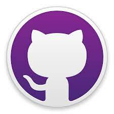
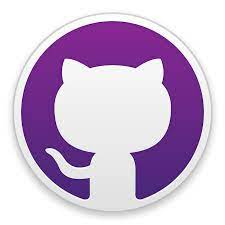
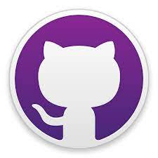

Sistema que tem por objetivo realizar o controle de versões de um código ou documento
É possível gerenciar as versões de um código ou documento realizadas por um desenvolvedor ou equipe de desenvolvedores.
Possui um repositório central em um servidor com controle de versões.
Depende do servidor.
Possui um repositório local com controle de versões.
Atualizações no repositório central
Independente do servidor.
É um software livre de versionamento que surgiu para o desenvolvimento do Kernel Linux, foi projetado e desenvolvido por Linus Torvalds em 2005.
Cada diretório de trabalho do Git é um repositório com um histórico completo e habilidade total de acomapnhamento das revisões, não dependente de acesso a uma rede ou a um servidor central.
commit - torna permanete um conjunto de alterações em um repositório.
push - envia alterações para o servidor no repositório remoto.
fetch - verifica se o repositório local estáem sincronia com o remoto.
pull - sincroniza o repositório local com o remoto atualizando as versões.
Plataforma de hospedagem de código fonte e arquivos com controle de versão.
Surgiu em 2008 e foi adquirido em 2018 pela Microsoft por US$ 7,5 bilhões.
Atualmente hospeda cerca de 100 milhões de projetos e possui aproximadamente 56 milhões de usuários.
Para fazer o dowload acesse os sites clicando nas imagens abaixo!

GitHub: Mariele Longato